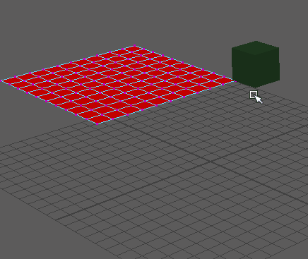

创建柔体锚点
- 创建两个多边形或 NURBS 对象。（在本示例中，我们使用一个平面和一个立方体。）
- 选择要将柔体锚定至的对象，然后选择“Bullet > 主动刚体”(Bullet > Active Rigid Body) >
 以打开主动刚体选项(Active Rigid Body Options)。在本示例中，我们将立方体的“实体类型”(Body Type)设置为“静态实体”(Static Body)，从而防止它在我们开始进行解算时移动。单击“应用并关闭”(Apply and Close)。
以打开主动刚体选项(Active Rigid Body Options)。在本示例中，我们将立方体的“实体类型”(Body Type)设置为“静态实体”(Static Body)，从而防止它在我们开始进行解算时移动。单击“应用并关闭”(Apply and Close)。
- 单击要成为柔体的对象，然后选择“Bullet > 柔体”(Bullet > Soft Body) > 以打开柔体选项(Soft Body Options)。在本示例中，我们已将平面转化为柔体并激活“自碰撞”(Self Collision)选项，使其呈现真实可信的织物外观。单击“应用并关闭”(Apply and Close)。
- 在柔体上单击鼠标右键，然后选择“顶点”(Vertex)。
- 在柔体上选择一个顶点。
- 选择要锚定顶点的刚体。（在本示例中，我们选择了立方体。）如果您不选择刚体，则将创建一个新刚体。
- 选择“Bullet > 创建柔体锚点”(Bullet > Create Soft Body Anchor)。
顶点现在已锚定至该刚体。可以使用影响柔体模拟的结果来为刚体设置动画或模拟刚体。请参见使用 Bullet 柔体创建布料模拟以查看使用柔体锚点的工作流。
